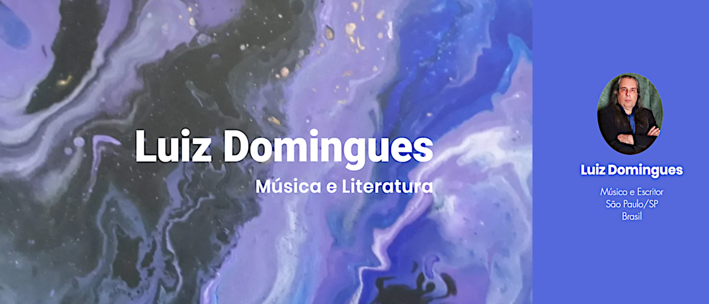

Olá, Leitor(a)!
Seja bem-vindo(a)!
Este espaço apresenta um panorama dos meus trabalhos na música, na literatura, no radialismo e no ativismo cultural. Aqui também divulgo um pouco do universo abstracionista e psicodélico da artista plástica e desenvolvedora de sistemas Carolina Tinoco, responsável pela criação e manutenção deste site.
Músico desde 1976, construí minha trajetória artística ao lado de diversos grupos musicais, dedicando-me principalmente às vertentes estéticas do Rock e do Blues, sem deixar de explorar, em menor medida, os caminhos da MPB. Atualmente, integro as bandas "Kim Kehl & Os Kurandeiros" e "Boca do Céu", dando continuidade a uma jornada marcada pela paixão pela música, pela liberdade criativa e pelo compromisso com a expressão artística.